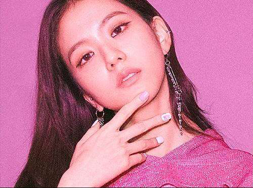

Kim Ji-soo (Korean: 김지수; born January 3, 1995), better known by the mononym Jisoo,
is a South Korean singer and actress. She made her debut in August 2016 as a member of the
girl group Blackpink under YG Entertainment.
Kim Ji-soo was born on January 3, 1995, in Gunpo, Gyeonggi, South Korea. She has an older
brother and sister.[6][7][better source needed] Jisoo attended high school at the School of Performing
Arts Seoul.
